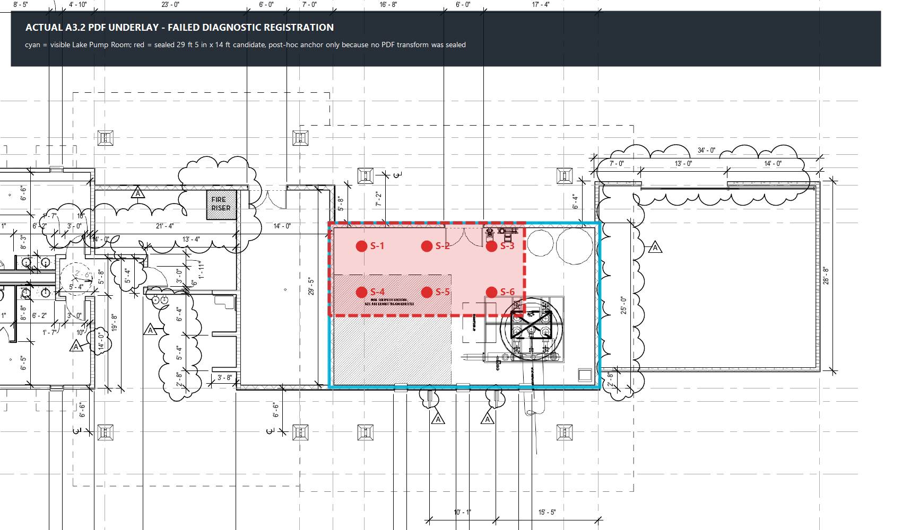
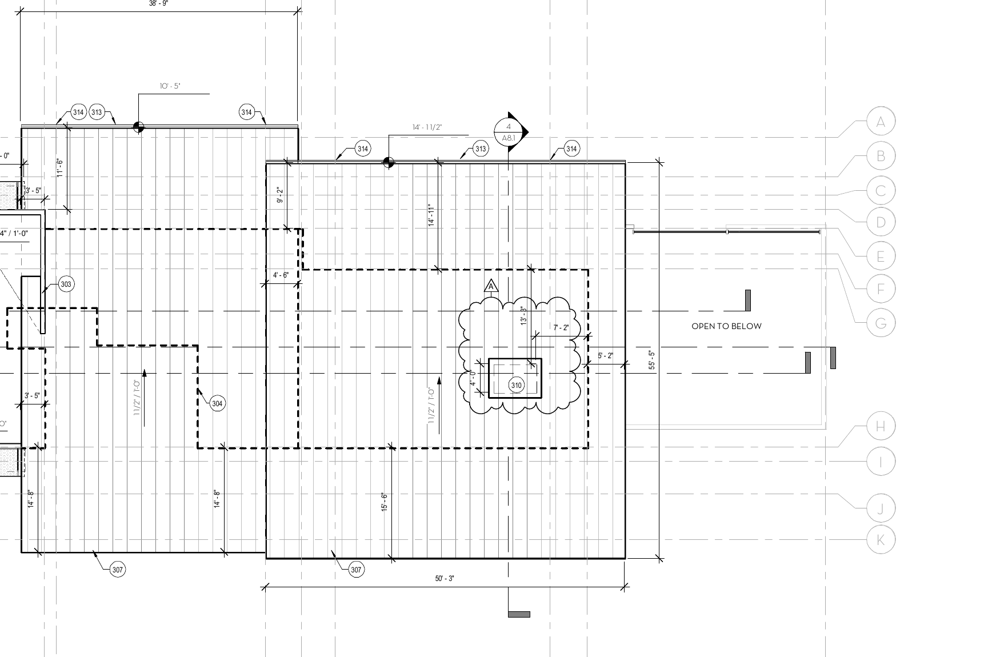
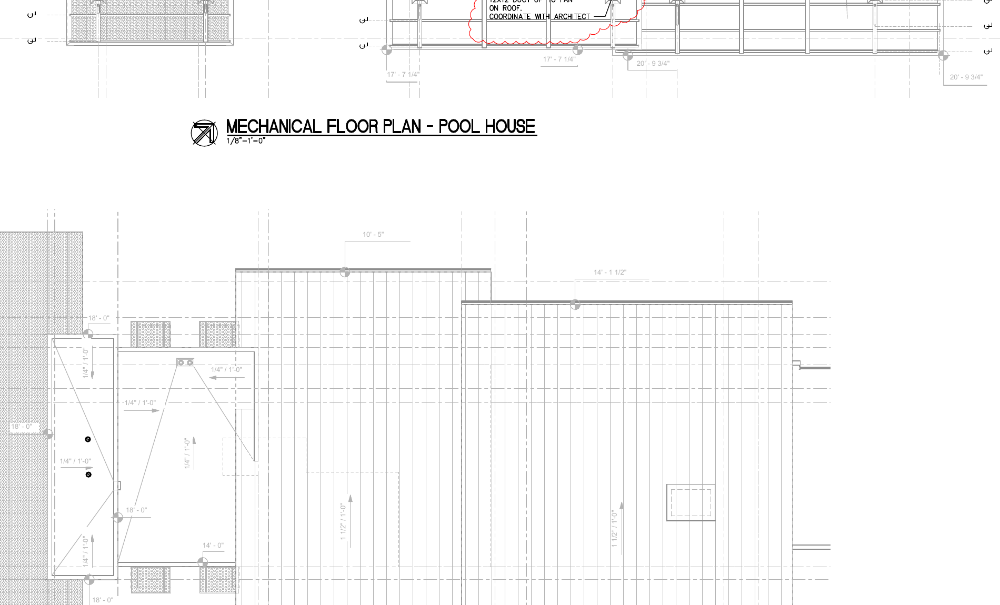
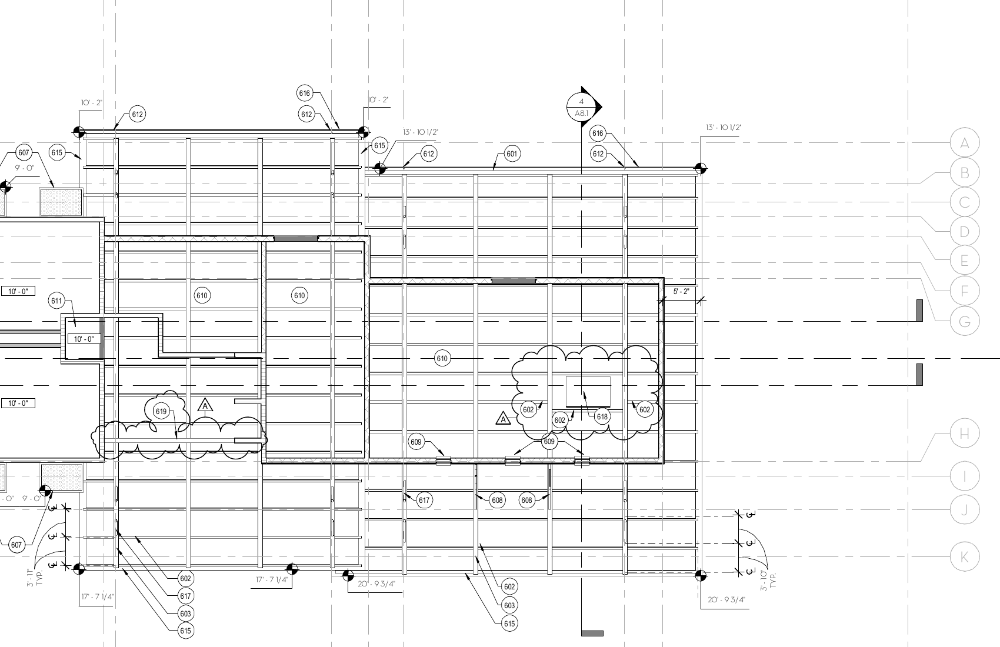
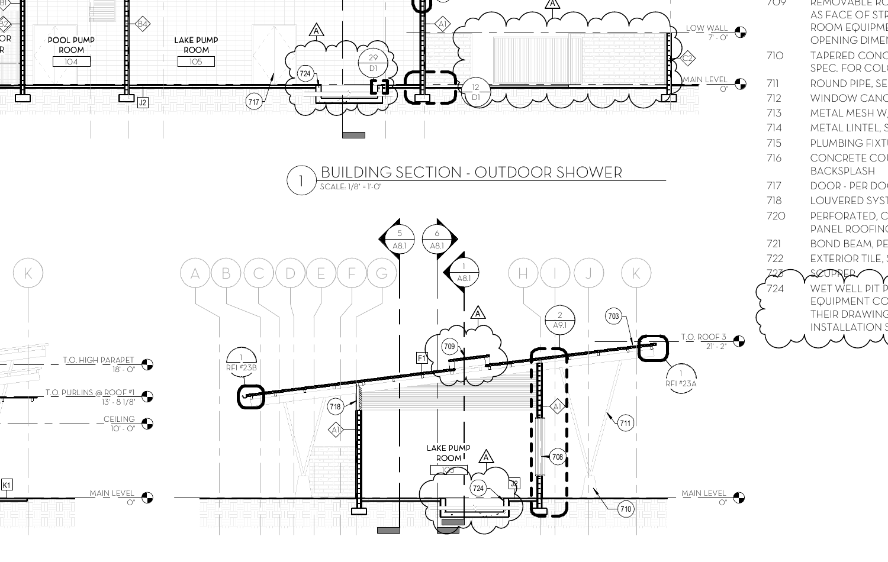
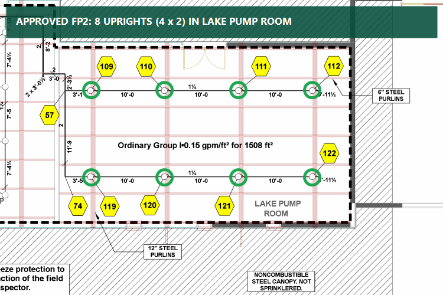
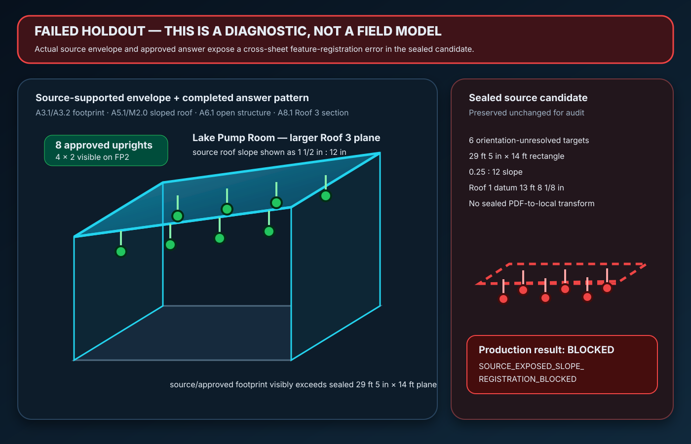

The actual PDFs caught a cross-registered pitched-roof model
Candidate c1d915a6 was pushed before the approved sprinkler plan was opened. Once FP2 was revealed, the source-only six-target plane failed against eight completed upright heads—and the source sheets showed the candidate had combined the wrong room dimensions, roof slope, and section datum.
6sealed unresolved targets
8approved upright heads
−2count deficit
0 / 8orientation parity
BLOCKEDproduction quarantine

Actual A3.2 PDF underlay. Cyan traces the visible Lake Pump Room. Red is the sealed candidate’s smaller 29′-5″ × 14′ plane, shown with an explicit post-hoc anchor because the candidate did not contain a PDF transform. This is a visible failure, not an XY pass.

Actual A5.1 roof-plan underlay. The Lake Pump Room lies under the larger Roof 3 plane; the source drawing shows the 50′-3″ roof extent and 1½:12 slope regime.

Actual M2.0 PDF underlay. Independent slope annotations distinguish the large 1½:12 planes from the small ¼:12 feature that was incorrectly transferred into the candidate.

Actual A6.1 RCP underlay. The room is open to structure with purlins and beams visible—orientation and obstruction treatment cannot be invented from a generic rectangle.

Actual A8.1 section underlay. The Lake Pump Room is explicitly sectioned below Roof 3. The sealed candidate instead used the Roof 1 purlin datum.

Actual AHJ-approved FP2 answer. Eight open-circle upright symbols are visibly arranged in four columns by two rows. The sheet schedule independently reports 15 uprights overall.

3D diagnostic tied to the source facts above. Cyan/green is the source-supported Roof 3 envelope plus the answer-exposed 4×2 upright pattern. Red is the immutable failed candidate. It is deliberately labeled diagnostic because exact XY and elevation scoring are unavailable without the missing source transform.
What changed in the system
The production placement policy now requires one feature identity to bind the floor-plan boundary, roof slope, RCP regime, section datum, and six-parameter PDF-to-local transform. The sealed holdout is preserved for audit, but normal generation rejects it with SOURCE_EXPOSED_SLOPE_REGISTRATION_BLOCKED.
actual source featurefailed sealed candidatecompleted approved heads
Claim boundary
Fresh-project placement, exact XY, exact deflector elevation, obstruction clearance, compliance, hydraulics, fabrication, and field release all remain false. This proof demonstrates that the failure was detected and quarantined; it does not claim a corrected production layout.